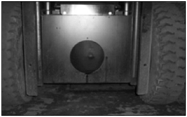
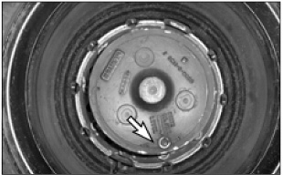
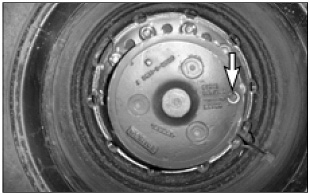

Park the lift truck on a level surface, parking brake applied,
transmission in neutral.
Warning:
Hot oil and components can cause personal injury. Do not allow hot oil or components to
contact skin.
Raise the carriage high enough to access the drive axle housing
level/fill plug with breather.
Block the bottom of the carriage with a block of wood to hold
the carriage in the raised position.
Turn the ignition switch OFF.

Typical Example
Remove the drive axle housing level/fill plug with breather.
Wash them in clean, nonflammable solvent.
Place an appropriate container under the axle to catch the oil
as it drains.
Remove the drive axle housing drain plug.
Allow the oil to drain completely out.
Discard the old oil according to local regulations.
Clean and reinstall the drive axle housing drain plug.

Typical Example
Remove planetary hub level/drain/fill plugs. Allow the oil to
drain completely out. Reinstall the planetary hub plugs.
Fill the drive axle housing with sufficient fresh oil through the drive axle housing
level/fill plug opening until it reaches the bottom of the hole. See the section, “Lubricant
the Viscosities.” and “Refill Capacities” for the type and amount of oil to use.

Remove the wood blocking and Lower the carriage.
Operate the lift truck for a few minutes. And align the
planetary hub drain/fill/level plugs to the horizontal position.
Remove the plugs.
Fill the planetary hubs, through the drain/fill/ level hole,
until the oil reaches the hole. See the section, “Refill
Capacities”.
Clean and reinstall the planetary hub drain/fill/ level
plugs.